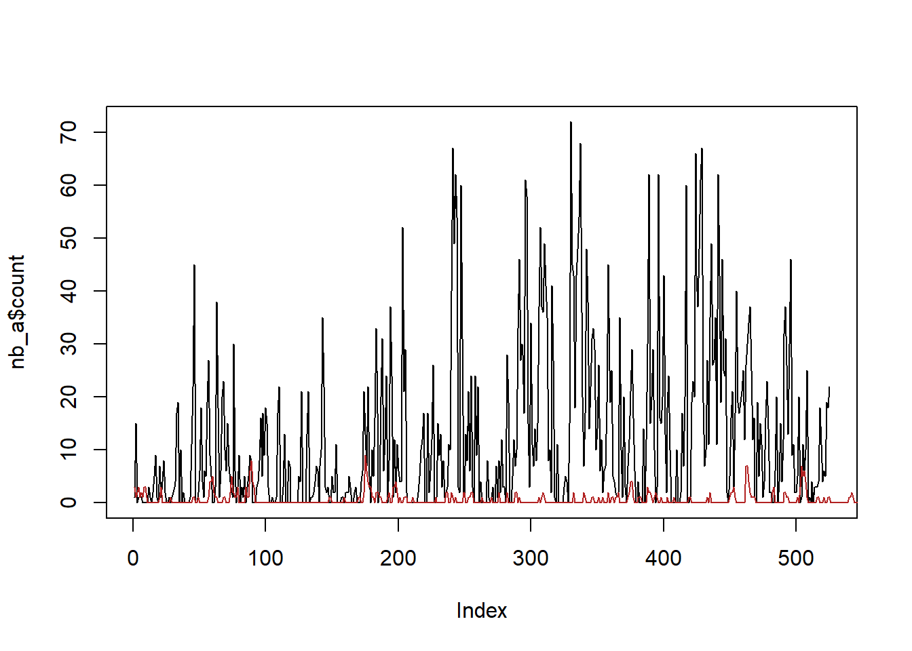

knitr::opts_knit$set(root.dir = rprojroot::find_rstudio_root_file())Negative binomial autocorr
library(tidyverse)
library(fitdistrplus)
devtools::load_all()I have data that is almost certainly autocorrelated and negative binomial distributed. I’m analysing it elsewhere, but bringing over two simplified datasets here. Here, x is a spatial location, and n is a count at that location.
The questions are:
Can we estimate the negative binomial and autocorrelation parameters?
Can we simulate distributions with the same properties?
That last bit is harder than the typical Gaussian AR sequence defined by \[X_{t+1} = \rho X_{t} + \epsilon_t\]
where if we have rho and the \(\mu\) and \(\sigma\) for the \(X\) distribution, we can calculate the appropriate \(\mu_\epsilon\) and \(\sigma_\epsilon\) using standard, well-known equations.
Clean simulation given \(\mu\) or \(p\), \(n\) (\(\delta\)), and \(\rho\)
So, we want to be able to fit an autocorrelated negative binomial distribution given the complete distribution and the AR(1) \(\rho\).
I mostly follow Gouriéroux and Lu (2019), with modifications that make it possible to set both \(\rho\) and \(\mu\) separately. In short, They have \(\rho = \beta c\), but set \(c=1\) because they say there’s no way to independently estimate both. The catch is, that links \(\rho\) and the \(\mu\) of the negative binomial, and we can’t set both. But, I’ve altered the estimation (and more importantly, setting) to get the beta from mu from the overall negbin and then adjust \(c\) to give the correct \(\rho\), i.e. \(c = \frac{\rho}{\beta}\).
I’ll try to use R’s nbinom parameter names, which use size and either prob or mu. I will refer to size as \(\delta\) because we are using it here as the dispersion parameter (shape parameter of the gamma mixing distribution). Like R, I’ll allow either prob or mu, though in practice I expect mu will be more common, since it is what’s returned by fitdistrplus::fitdist(), and so will be easier to use when we have empirical distributions and for checking.
Set up the functions
These will all be done in /R and exported as well.
First, we define some helpers to move between \(\beta\), \(p\), and \(\mu\).
p_from_beta <- function(beta) {
beta/(beta + 1)
}
p_from_mu <- function(mu, n) {
n / (n + mu)
}
beta_from_p <- function(p) {
-p/(p-1)
}
mu_from_p <- function(p, n) {
(n*(1-p))/p
}
beta_from_mu <- function(mu, n) {
p <- p_from_mu(mu, n)
beta_from_p(p)
}
mu_from_beta <- function(beta, n) {
p <- p_from_beta(beta)
mu_from_p(p, n)
}Then, we can write the main function to generate the AR(1) sequence
rnbinomAR <- function(n, size, prob, mu, rho, return_Y = FALSE) {
if (!missing(prob) & !missing(mu)) {
rlang::abort('Use either `prob` or `mu`')
}
if (!missing(prob)) {
beta <- beta_from_p(prob)
}
if (missing(prob)) {
beta <- beta_from_mu(mu, size)
}
# This differs from Gourieroux & Lu, as theirs (c = 1) yielded incorrect means.
c_param = rho/beta
# just initialise the whole vector
if (!missing(prob)) {
X <- rnbinom(n, size = size, prob = prob)
}
if (!missing(mu)) {
X <- rnbinom(n, size = size, mu = mu)
}
# Initialise the intensity process
Y <- X*NA
# Build the sequence one step at a time according to Gourieroux & Lu Definition 1.
for (i in 2:length(X)) {
Y[i] <- rgamma(1, shape = size+X[i-1], scale = c_param)
X[i] <- rpois(1, lambda = beta*Y[i])
}
if (return_Y) {
return(list(X = X, Y = Y))
} else {
return(X)
}
}A standard set of checks are then to fit that and return the mu, size, and rho. Could do the acf plot too, but that’s just using acf. These can then be compared to the set values.
fit_nbinomAR <- function(X) {
# check the size and mu
musize <- fitdistrplus::fitdist(X, 'nbinom')
# check the AR
ac_x1 <- acf(X)$acf[2]
# return tibble
nbinar_est <- tibble::tibble(term = c(names(musize$estimate), 'rho'),
estimate = c(musize$estimate, ac_x1),
std_error = c(musize$sd, NA))
return(nbinar_est)
}We can also check statistical correspondence of the complete distribution using a chi-square test and visualisations. These just check the distribution, however, not the AR. We’ll have to take the rho estimation from acf’s word on that.
nbin_emp_pmf <- function(X, size, prob, mu) {
freq_x <- tibble::tibble(count = X) |>
dplyr::summarise(empirical = dplyr::n()/length(X),
.by = count) |>
dplyr::arrange(count)
if (!missing(prob) & !missing(mu)) {
rlang::abort('Use either `prob` or `mu`')
}
if (!missing(prob)) {
x_dist <- tibble::tibble(count = 0:max(freq_x$count),
pmf = dnbinom(count,
size = size,
prob = prob))
}
if (missing(prob)) {
x_dist <- tibble::tibble(count = 0:max(freq_x$count),
pmf = dnbinom(count,
size = size,
mu = mu))
}
# Do I want to be able to do this for the *given* params and the *fitted* params? Or just do it twice? I think probably do it twice, otherwise this gets VERY specific.
# Join into one dataframe
x_dist <- x_dist |>
dplyr::left_join(freq_x)
return(x_dist)
}The plot and chi
nbin_gg <- function(distdf) {
nbin_gg_check <- distdf |>
pivot_longer(-count) |>
ggplot(aes(x = count, y = value, color = name)) +
geom_line() +
labs(y = 'P(X=x)', color = '')
return(nbin_gg_check)
}nbin_chi <- function(distdf, grouper) {
distdf |>
summarise(chi_p = chisq.test(empirical, pmf)$p.value,
.by = {{grouper}})
}Simulation and checking
I’ll demonstrate with a set of test parameters:
rho <- 0.75
delta <- 1.5
mu <- 5Generate a length-1000 sequence
test_seq <- rnbinomAR(1000, size = delta, mu = mu, rho = rho)Make a quick plot
plot(test_seq, type = 'l')And check it worked
fit_nbinomAR(test_seq)# A tibble: 3 × 3
term estimate std_error
<chr> <dbl> <dbl>
1 size 1.29 0.0776
2 mu 4.44 0.141
3 rho 0.776 NA Those are reasonably close.
To do the chi square and plot checks of the overall distribution, we need to get the frequencies with nbin_emp_pmf
test_freq <- nbin_emp_pmf(test_seq, size = delta, mu = mu)Joining with `by = join_by(count)`The chi is > 0.05 so empirical and theoretical are not distinguishable.
nbc <- nbin_chi(test_freq)Warning: There was 1 warning in `summarise()`.
ℹ In argument: `chi_p = chisq.test(empirical, pmf)$p.value`.
Caused by warning in `chisq.test()`:
! Chi-squared approximation may be incorrectnbc# A tibble: 1 × 1
chi_p
<dbl>
1 0.272And the plot of the empirical and theoretical pmfs
nbin_gg(test_freq)
Estimation and simulation
Above, we just chose some parameter values. In many cases, we’ll want to estimate them from empirical data, and then simulate new data with the same distribution. I’ve saved two sets of empirical data here that I’ll demonstrate with. This is where what looked good above falls apart.
nb_a <- readRDS('data/negbin_testing/nb_testA.rds')
nb_s <- readRDS('data/negbin_testing/nb_testS.rds')We use fit_nbinomAR to get the estimates of \(\delta\), \(\mu\) and \(\rho\) (which calls fitdistrplus::fitdist and acf).
afit <- fit_nbinomAR(nb_a$count) sfit <- fit_nbinomAR(nb_s$count)Those seem to fit the nbinom pretty well
test_freqa <- nbin_emp_pmf(nb_a$count, size = afit$estimate[afit$term == 'size'], mu = afit$estimate[afit$term == 'mu'])Joining with `by = join_by(count)`nbin_gg(test_freqa)test_freqs <- nbin_emp_pmf(nb_s$count, size = sfit$estimate[sfit$term == 'size'], mu = sfit$estimate[sfit$term == 'mu'])Joining with `by = join_by(count)`nbin_gg(test_freqs)Now we use those fits to generate new data. Though given how far off those PMFs are, not much hope that this will work.
sim_a <- rnbinomAR(1000,
size = afit$estimate[afit$term == 'size'],
mu = afit$estimate[afit$term == 'mu'],
rho = afit$estimate[afit$term == 'rho'])
sim_s <- rnbinomAR(1000,
size = sfit$estimate[sfit$term == 'size'],
mu = sfit$estimate[sfit$term == 'mu'],
rho = sfit$estimate[sfit$term == 'rho'])Now let’s check those.
simfita <- fit_nbinomAR(sim_a)simfitb <- fit_nbinomAR(sim_s)Despite working well above, this has now completely fallen apart- the mu in particular are MUCH smaller.
To directly compare the original fits and the simulated data, we can join them. The size parameter isn’t terrible, rho is pretty good, but mu is horrible.
afitsim <- afit |>
rename(data_estimate = estimate, data_se = std_error) |>
bind_cols(simfita |>
dplyr::select(-term) |>
rename(sim_estimate = estimate, sim_se = std_error))
afitsim# A tibble: 3 × 5
term data_estimate data_se sim_estimate sim_se
<chr> <dbl> <dbl> <dbl> <dbl>
1 size 0.507 0.0334 0.379 0.0424
2 mu 12.4 0.776 0.581 0.0383
3 rho 0.551 NA 0.545 NA sfitsim <- sfit |>
rename(data_estimate = estimate, data_se = std_error) |>
bind_cols(simfitb |>
dplyr::select(-term) |>
rename(sim_estimate = estimate, sim_se = std_error))
sfitsim# A tibble: 3 × 5
term data_estimate data_se sim_estimate sim_se
<chr> <dbl> <dbl> <dbl> <dbl>
1 size 0.750 0.0688 0.317 0.0350
2 mu 22.1 1.66 0.490 0.0353
3 rho 0.355 NA 0.372 NA How do those look plotted?
plot(nb_a$count, col = 'black', type = 'l')
lines(sim_a, col = 'firebrick')
plot(nb_s$count, col = 'black', type = 'l')
lines(sim_s, col = 'firebrick')So, this is clearly not really working. Some things to investigate further
If I ignore AR, does
fitdistrplus::fitdist(X, 'nbinom')return the right \(\mu\)?Similarly, if I simulate data with
rnbinom(instead ofrnbinomAR), do I get an nbinom with the right \(\mu\)?- This is probably the thing to check first.
It does look like rnbinom works fine, that blue line has similar mean to the black.
simanr <- rnbinom(1000,
size = afit$estimate[afit$term == 'size'],
mu = afit$estimate[afit$term == 'mu'])
plot(nb_a$count, col = 'black', type = 'l')
lines(sim_a, col = 'firebrick')
lines(simanr, col = 'dodgerblue')So, the issue is in rnbinomAR, likely in a decay of the c_param in the gamma in Y. Will need to look more deeply into what’s happening there, and if it’s fixable. Likely start with setting returnY = TRUE and seeing if that gamma holds its mean or decays. Maybe there’s a nonlinearity in there that lets it decay (well, makes the decay noticeable) at high mu.
References
Gouriéroux, Christian, and Yang Lu. 2019. “Negative Binomial Autoregressive Process with Stochastic Intensity.” Journal of Time Series Analysis 40 (2): 225–47. https://doi.org/10.1111/jtsa.12441.